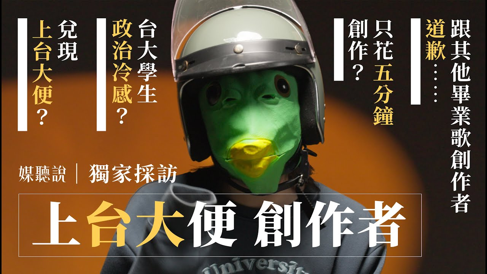
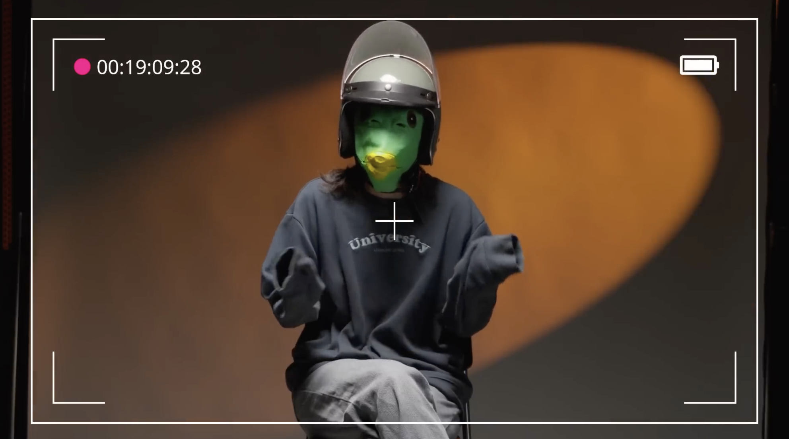
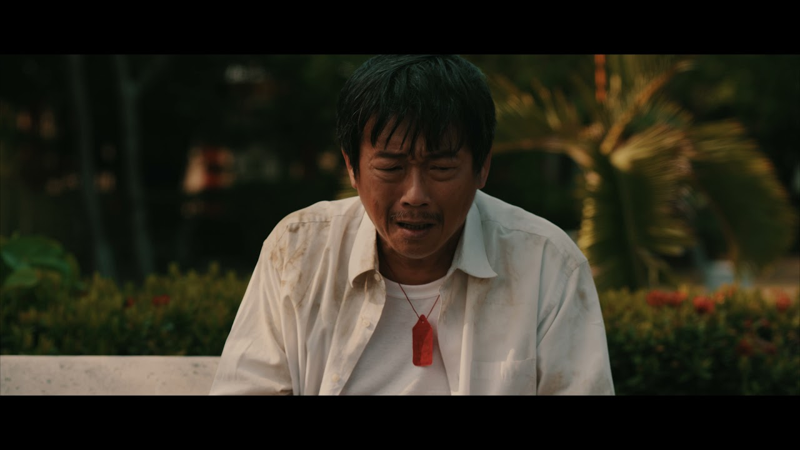
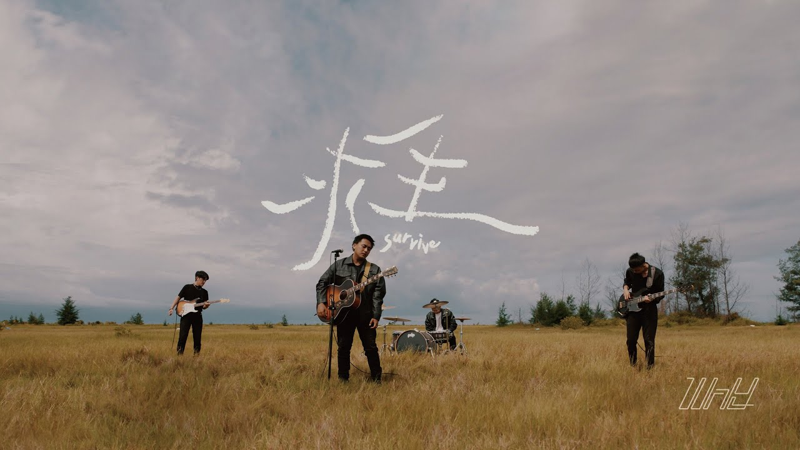

Video
Video
5 works. Click a title to watch.

2025 【獨家專訪】台大畢業歌〈上台大便〉創作者幕後秘辛分享 長影音Views: 71,995Exclusive interview: the creator of NTU’s graduation song on how it was made (full version) YouTube · Camera / Editing↗
2025 【獨家專訪】台大畢業歌〈上台大便〉創作者幕後秘辛分享 短影音Views: 8,512Exclusive interview: the creator of NTU’s graduation song on how it was made (short) YouTube · Camera / Editing↗ 2025 狗狗政治學 @woofpoliticsWoof Politics Instagram · Planning / Editing↗
2022 《訊號影展》開幕片《求生》Survive, opening film of the Signal Film Festival Cinematography↗
2022 WHY [ 求生 Survive ] Official Music VideoWHY [ Survive ] Official Music Video Cinematography↗